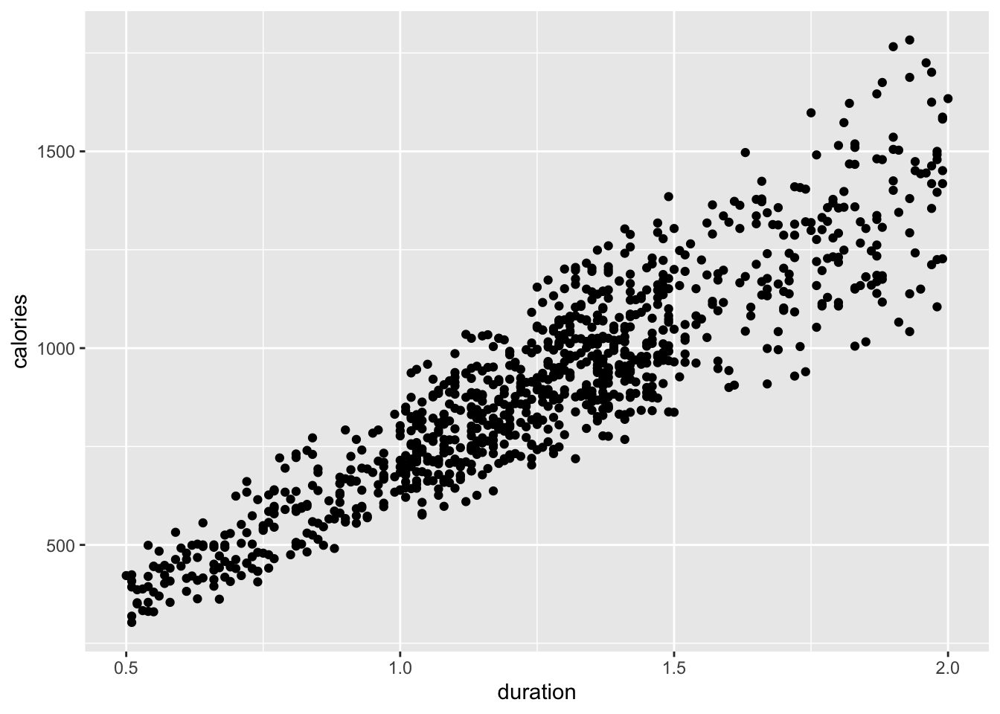
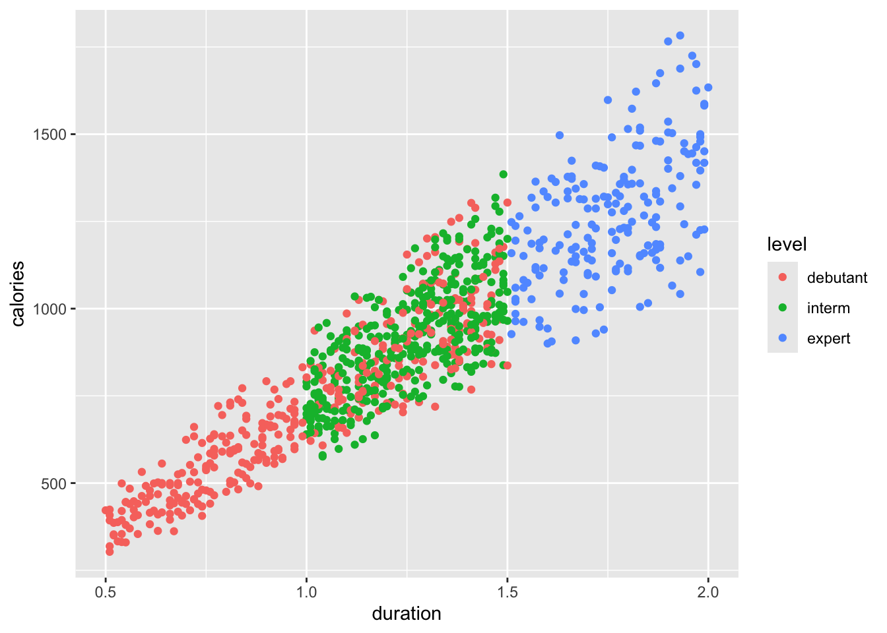
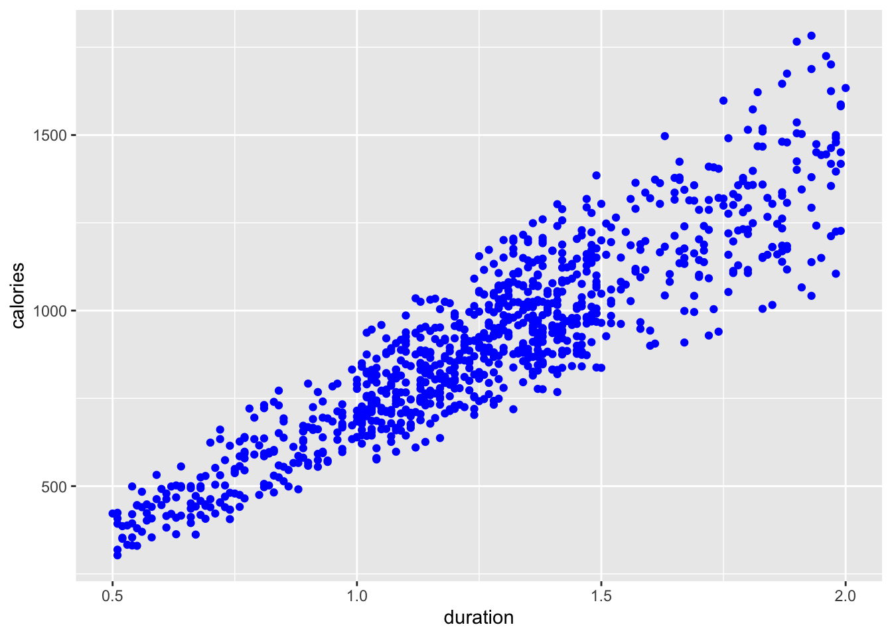
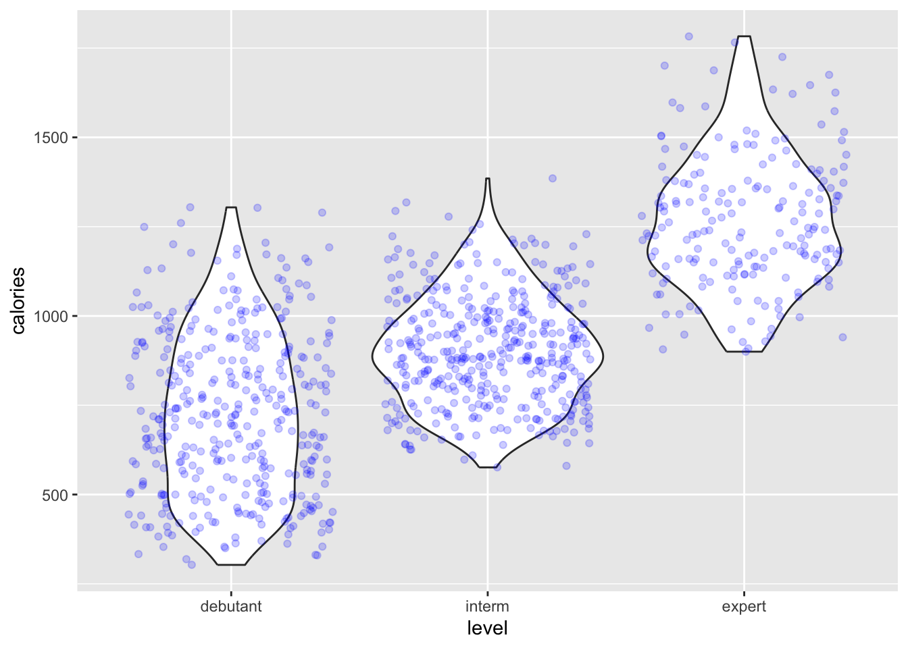
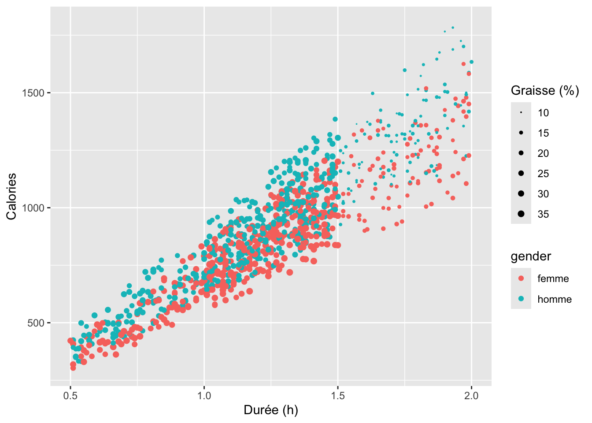
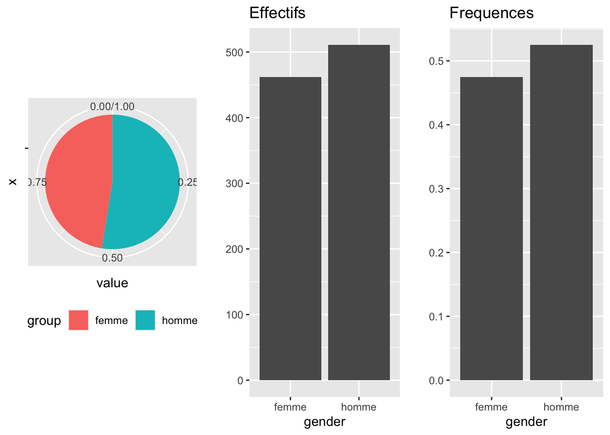
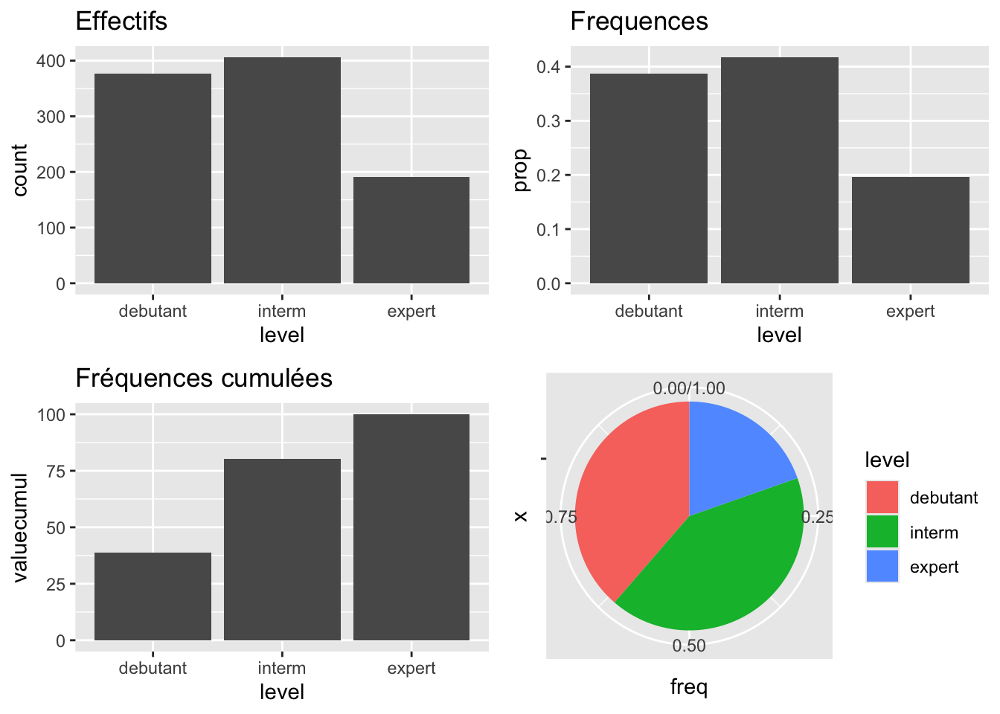
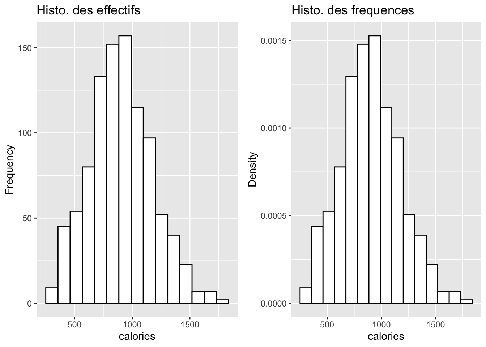
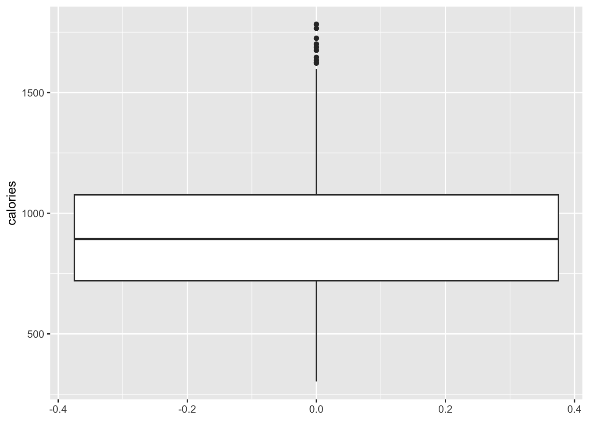
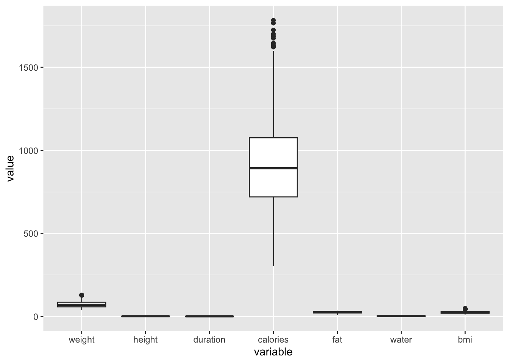

gym <- read.table("DataGym3MIC.txt",header=TRUE)TP2 : Statistiques Descriptives
Ce TP a pour objectif de mener l’étude descriptive uni- et bi-dimensionnelle du jeu de données DataGym3MIC disponible sous Moodle. Vous rédigerez les réponses et vos observations dans le script en .qmd du TP au fur et à mesure. Vous pourrez compiler votre script à la fin du TP pour obtenir un compte-rendu du TP.
Remarque : pensez à enlever les “#|eval: false” au fur et à mesure de l’avancement dans le TP pour avoir les résultats dans votre compte-rendu final de TP.
1 Données
On va étudier le jeu de données DataGym3MIC disponible sur la page moodle du cours.
Commencez par récupérer ce jeu de données et sauvegardez le fichier dans votre dossier de travail. Chargez le jeu de données à l’aide de la fonction read.table() :
Vous pouvez voir les premières lignes du jeu de données à l’aide de la fonction head() :
head(gym) gender weight height duration calories fat water level bmi
1 Male 88.3 1.71 1.69 1313 12.6 3.5 3 30.20
2 Female 74.9 1.53 1.30 883 33.9 2.1 2 32.00
3 Female 68.1 1.66 1.11 677 33.4 2.3 2 24.71
4 Male 53.2 1.70 0.59 532 28.8 2.1 1 18.41
5 Male 46.1 1.79 0.64 556 29.2 2.8 1 14.39
6 Female 58.0 1.68 1.59 1116 15.5 2.7 3 20.55Le jeu de données DataGym3MIC fournit un aperçu détaillé des routines d’exercice, des attributs physiques et des mesures de la condition physique de \(973\) membres d’une salle de sport. Chaque membre est décrit par les variables suivantes :
- gender : son sexe (Female pour une femme, Male pour un homme),
- weight : son poids (en kg),
- height : sa taille (en m),
- duration : la durée de chaque séance d’entraînement (en heures),
- calories : le total des calories brûlées au cours de chaque séance,
- fat : son pourcentage de graisse corporelle,
- water : sa consommation quotidienne d’eau pendant les séances d’entraînement (en litres),
- level : son niveau d’expérience, de débutant (1) à expert (3),
- bmi : son indice de masse corporelle (IMC), calculé à partir de la taille et du poids.
Question : Contrôlez la dimension du jeu de données (c’est-à-dire le nombre d’individus et le nombre de variables). Vous pouvez vous aider des fonctions dim(), nrow()et ncol().
# A COMPLETERQuestion : Contrôlez que l’objet gym est bien de type data.frame (commande is.data.frame()).
Remarquons que l’on peut obtenir les noms des variables grâce à la commande names(gym) ou colnames(gym). Plus largement, on peut utiliser la commande attributes().
# A COMPLETERQuestion : Quelle est la nature de chaque variable ? Vous pouvez vous aider de la commande str().
# A COMPLETEROn voit ici que les variables sont de différentes natures :
- La variable gender est une variable qualitative nominale
- La variable level est une variable qualitative ordinale (bien que codée par des entiers 1, 2, 3 dans le fichier !)
- Les autres variables sont quantitatives
Attention, il faut bien préciser à R les variables qui doivent être considérées comme qualitatives. On utilise donc la fonction factor() sur les variables gender et level. On va aussi en profiter pour renommer les modalités de la variable gender en femme et homme, et celles de la variable level en debutant, interm et expert.
gym$gender<-factor(gym$gender,labels=c("femme","homme"))
gym$level<-factor(gym$level,labels=c("debutant","interm","expert"))
head(gym) gender weight height duration calories fat water level bmi
1 homme 88.3 1.71 1.69 1313 12.6 3.5 expert 30.20
2 femme 74.9 1.53 1.30 883 33.9 2.1 interm 32.00
3 femme 68.1 1.66 1.11 677 33.4 2.3 interm 24.71
4 homme 53.2 1.70 0.59 532 28.8 2.1 debutant 18.41
5 homme 46.1 1.79 0.64 556 29.2 2.8 debutant 14.39
6 femme 58.0 1.68 1.59 1116 15.5 2.7 expert 20.55On peut obtenir un résumé rapide du jeu de données à l’aide de la fonction summary()
summary(gym) gender weight height duration calories
femme:462 Min. : 40.00 Min. :1.500 Min. :0.500 Min. : 303.0
homme:511 1st Qu.: 58.10 1st Qu.:1.620 1st Qu.:1.040 1st Qu.: 720.0
Median : 70.00 Median :1.710 Median :1.260 Median : 893.0
Mean : 73.85 Mean :1.723 Mean :1.256 Mean : 905.4
3rd Qu.: 86.00 3rd Qu.:1.800 3rd Qu.:1.460 3rd Qu.:1076.0
Max. :129.90 Max. :2.000 Max. :2.000 Max. :1783.0
fat water level bmi
Min. :10.00 Min. :1.500 debutant:376 Min. :12.32
1st Qu.:21.30 1st Qu.:2.200 interm :406 1st Qu.:20.11
Median :26.20 Median :2.600 expert :191 Median :24.16
Mean :24.98 Mean :2.627 Mean :24.91
3rd Qu.:29.30 3rd Qu.:3.100 3rd Qu.:28.56
Max. :35.00 Max. :3.700 Max. :49.84 2 Présentation de ggplot2
Avant de commencer l’analyse uni- et bi-dimensionnelle du jeu de données, on va ici donner quelques notions sur les graphiques avec ggplot2 pour comprendre la suite.
ggplot2 est une extension dédiée aux graphiques. Elle est basée sur une syntaxe particulière mais robuste et efficace pour la construction de graphiques complexes. Elle part du principe (comme tout package de tidyverse) que les données relatives au graphique sont stockées dans un tableau (data.frame ou tibble).
Un graphique en ggplot2 s’initialise avec la fonction ggplot() qui prend en argument le jeu de données étudié. Par exemple,
gEx <- ggplot(data=gym)Pour l’instant, on ne voit rien mais pourtant l’objet gEx contient des informations:
summary(gEx)data: gender, weight, height, duration, calories, fat, water, level,
bmi [973x9]
faceting: <empty> names(gEx)NULLgEx$layerslist()mais pour l’instant son layers est vide.
On ajoute ensuite des éléments graphiques, appelés geom, à l’objet graphique grâce à l’opérateur + et on précise à l’aide de la fonction aes() les données à utiliser en argument du geom. Par exemple, si on veut tracer le nuage de points entre les variables duration et calories :
ggplot(data=gym,aes(x=duration,y=calories))+
geom_point()
Parmi les geom les plus utilisés, on peut citer
geom_point(): nuage de pointsgeom_line(): trace des lignesgeom_bar(): représentation en bâtonsgeom_boxplot(): boxplotgeom_violin(): violin plotgeom_histogram(): histogrammegeom_density(): densitégeom_smooth()
On peut ajouter un mappage, c’est à dire une mise en relation entre un attribut graphique d’un geom et une variable du tableau de données. Par exemple, on peut mettre des couleurs à un nuage de points en fonction d’une variable qualitative, … Il faut bien distinguer un mappage d’une modification d’un attribut graphique sans lien avec une variable. Une règle importante à retenir est donc
- pour définir un mappage (relation entre les valeurs d’une variable et un attribut graphique), on le déclare dans
aes() - pour modifier un attribut graphique de la même manière pour tous les points, on le définit en-dehors de la fonction
aes().
Par exemple,
ggplot(data=gym)+
geom_point(aes(x=duration,y=calories,color=level))
ggplot(data=gym)+
geom_point(aes(x=duration,y=calories),color="blue")
On peut représenter plusieurs geom sur un même graphique simultanément, il suffit d’utiliser l’opérateur + pour les ajouter au fur et à mesure. Par exemple,
ggplot(data=gym)+
geom_violin(aes(x=level,y=calories))+
geom_point(aes(x=level,y=calories), col = "blue", alpha = 0.2,position="jitter")
Les scales permettent de modifier la façon dont un attribut graphique est lié aux valeurs d’une variable. Pour les modifier, on ajoute un nouvel élément de la forme scale_<attribut>_<type> à l’objet graphique ggplot2 avec +. Les scales les plus connus sont :
scale_size()(avec son argumentrange) pour modifier les tailles minimales, maximales, …scale_x()etscale_y()pour modifier l’axexet l’axeyrespectivementscale_x_continuous()(resp.scale_x_discrete()) pour modifier l’axe desxdans le cas d’une variable quantitative (resp. une variable qualitative)scale_y_continuous()(resp.scale_y_discrete()) pour modifier l’axe desydans le cas d’une variable quantitative (resp. une variable qualitative)scale_color()pour modifier les couleurs de dessinscale_fill()pour modifier les couleurs de remplissage
Pour les couleurs, on peut spécifier un gradient de couleur sur une variable quantitative avec scale_color_gradient(), modifier manuellement la palette de couleur avec scale_color_manual(), faire appel à une palette de couleur prédéfinie (par exemple en utilisant le package viridis avec scale_color_viridis, en s’appuyant sur les palettes disponibles dans ColorBrewer avec scale_color_brewer()), …
ggplot(data=gym)+
geom_point(aes(x=duration,y=calories,size=fat,color=gender))+
scale_size("Graisse (%)", range = c(0,2),breaks=seq(10,35,5)) +
scale_x_continuous("Durée (h)",limits=c(0.5,2)) +
scale_y_continuous("Calories",limits=c(300,1800))
Remarque : on peut modifier certains éléments avec une commande spécifique comme
ggtitle()pour modifier le titrexlab()etylab()pour modifier l’intituler de l’axe des abscisses et des ordonnées respectivement
En bref, les possibles avec ggplot2 sont infinis car de nombreux éléments sont personnalisables. Voici quelques références pour les graphiques en ggplot2 parmi les nombreuses ressources disponibles sur le web :
- Le livre Ggplot2: Elegant Graphics for Data Analysis de H. Wickham.
- Le site web de ggplot2
- The R Graph Gallery
- The Cheat Sheet de ggplot 2
3 Etude statistique unidimensionnelle
3.1 Pour une variable qualitative
Nous nous intéressons dans cette partie aux deux variables qualitatives gender et level.
Question : A l’aide des commandes table(), summary() et levels(), donnez un résumé de la variable gender. Quels sont les modalités du facteur ?
# A COMPLETERQuestion : A l’aide du code suivant, résumez graphiquement la variable gender par une représentation par secteurs ou un diagramme en barres. Interprétez les résultats.
g1<-ggplot(gym, aes(x=gender))+
geom_bar()+
ylab("")+
ggtitle("Effectifs")
g2<-ggplot(gym, aes(x = gender)) +
geom_bar(aes(y = (after_stat(count))/sum(after_stat(count))))+
ylab("")+
ggtitle("Frequences")
df <- data.frame(group = levels(gym$gender),
value = as.vector(table(gym$gender))/nrow(gym))
g3<-ggplot(df, aes(x="", y=value, fill=group))+
geom_bar(width = 1, stat = "identity")+
coord_polar("y", start=0)+
theme(legend.position="bottom")
grid.arrange(g3,g1,g2,ncol=3)
Question : La variable level est une variable qualitative ordinale. On peut donc utiliser les effectifs cumulés et les fréquences cumulées. Pour tracer les fréquences cumulées, il faut que l’ordre des modalités soit bien compris par R. Ici, on s’assure que les modalités sont bien ordonnées en debutant, interm et expert (c’est déjà le cas ici, mais la fonction fct_relevel() permet de réorganiser les modalités si besoin). A l’aide des codes suivants, étudiez la variable level.
gym$level <- fct_relevel(gym$level,"debutant","interm","expert")
EffLevel=as.vector(table(gym$level))
FreqLevel= data.frame(Eff = EffLevel,
Freq = EffLevel/length(gym$level), FreqCumul=cumsum(EffLevel)/length(gym$level))
rownames(FreqLevel)<-levels(gym$level)
knitr::kable(FreqLevel,
caption = 'Description de la variable level',
booktabs = TRUE,
digits=3)| Eff | Freq | FreqCumul | |
|---|---|---|---|
| debutant | 376 | 0.386 | 0.386 |
| interm | 406 | 0.417 | 0.804 |
| expert | 191 | 0.196 | 1.000 |
df <- data.frame(level = levels(gym$level),
value = table(gym$level),
valuecumul = 100 *cumsum(prop.table(table(gym$level))))
df$level <- fct_relevel(df$level, "debutant", "interm", "expert")
df <- data.frame(df, freq = df$value.Freq/nrow(gym))
g1 <- ggplot(gym) +
geom_bar(aes(x = level)) +
ggtitle("Effectifs")+
xlab("level")
g2 <- ggplot(gym) +
geom_bar(aes(x = level, y = after_stat(prop), group = 1))+
ggtitle("Frequences")+
xlab("level")
g3 <- ggplot(df, aes(x = level, y = valuecumul))+
geom_bar(stat = "identity")+
ggtitle("Fréquences cumulées")
g4 <- ggplot(df, aes(x = "", y = freq, fill = level))+
geom_bar(width = 1, stat = "identity")+
coord_polar("y", start = 0)
grid.arrange(g1, g2, g3, g4, ncol = 2)
3.2 Pour une variable quantitative
Pour cette section, on se focalise sur la variable calories.
3.2.1 Indicateurs statistiques
Question : Que calculent les commandes mean(), median(), var(), sd(), range() ? Calculez l’étendue des données.
# A COMPLETERQuestion : Etudiez les sorties des commandes summary(gym$calories) et quantile(gym$calories). Donnez également l’écart interquartile et les valeurs adjacentes.
# A COMPLETER3.2.2 Représentations graphiques
Le but de la statistique exploratoire est de synthétiser, résumer et structurer l’information contenue dans des données. On utilise pour cela des représentations de données sous forme de graphiques.
Question : On peut utiliser la représentation par histogramme. Tapez H<-hist(gym$calories) et commentez les différents attributs de H.
# A COMPLETERPour tracer un histogramme avec ggplot2, on pouvez utiliser le code suivant. Commentez.
g1<-ggplot(gym,aes(x=calories))+
geom_histogram(bins=15,color="black",fill="white")+
ggtitle("Histo. des effectifs")+
ylab("Frequency")+xlab("calories")
g2<-ggplot(gym,aes(x=calories))+
geom_histogram(aes(y=after_stat(density)),bins=15,color="black", fill="white")+
ggtitle("Histo. des frequences")+
ylab("Density")+xlab("calories")
grid.arrange(g1,g2,ncol=2)
Question : A l’aide du code suivant, représentez un boxplot de la variable calories. Que remarquez-vous ? Comparez avec les valeurs adjacentes calculées précédemment.
ggplot(gym,aes(y=calories))+
geom_boxplot()
ggplot(gymaux,aes(x=variable,y=value))+
geom_boxplot()
Question : En vous aidant de l’aide de R et des résultats de la section précédente, tapez B<-boxplot(gym$calories) et commentez les différents attributs de B.
# A COMPLETER4 Statistiques descriptives bidimensionnelles
4.1 Entre 2 variables quantitatives
Question : Calculez la matrice de corrélation des variables quantitatives (commande cor()) ou la matrice de variance-covariance (commandes var() ou cov()). Représentez graphiquement les corrélations à l’aide de la fonction corrplot() de la librairie corrplot. Vous pourrez utiliser l’option method="ellipse" pour une meilleure lisibilité. Interprétez les résultats.
# A COMPLETERQuestion : Représentez graphiquement les calories en fonction de la duration à l’aide de la commande geom_point(). Au vu de ce graphique, les variables sont-elles corrélées ? Vous pourrez ajouter la commande +geom_smooth(method="lm") pour tracer la droite de régression linéaire. Est-ce cohérent avec la corrélation calculée ci-dessus ?
# A COMPLETER4.2 Entre une variable quantitative et une variable qualitative
Question : Représentez le boxplot de la variable calories pour chaque modalité de la variable qualitative gender. Même question avec level. Interprétez les résultats.
# A COMPLETERQuestion : Explorez les autres combinaisons de variables quantitatives avec les variables qualitatives afin de déterminer les variables fortement liées.
# A COMPLETERQuestion : A l’aide de la fonction eta2() de la librairie BioStatR, calculez le rapport de corrélation \(\eta^2\) entre chaque variable quantitative et la variable gender. Commentez. Faites de même avec la variable level.
# A COMPLETER4.3 Entre deux variables qualitatives
Question : Analysez la table de contingence entre les deux variables qualitatives gender et level avec la commande table(). Ajoutez les effectifs marginaux avec la commande addmargins().
# A COMPLETERQuestion : Calculez et représentez les profils-lignes à l’aide des fonctions prop.table(..., margin = ...) et mosaicplot. Interprétez les résultats. Faites de même avec les profils-colonnes.
# A COMPLETER